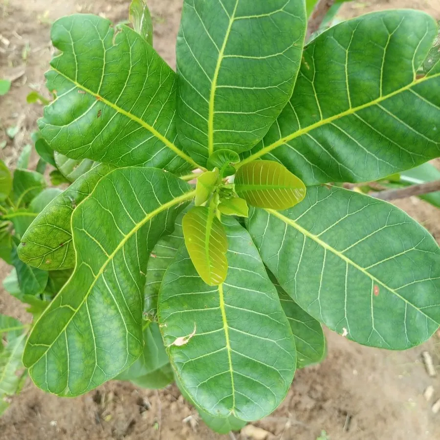

农作物与经济植物 · 植物界
腰果 Anacardium occidentale

腰果是漆树科常绿乔木，果实分为膨大的花托和肾形坚果，坚果香脆富含油脂，可炒食或制腰果仁，是重要热带坚果。
- 分类
- 门被子植物门纲双子叶植物纲目无患子目科漆树科属腰果属
- 栖息环境
- 热带海岸与丘陵，喜高温、耐旱耐瘠
- 地理分布
- 原产巴西东北部，现主产于印度、越南、非洲与中国海南
- 保护级别
- 暂无评估（栽培作物）
物种志
腰果是漆树科常绿乔木，株高可达 8–12 m，树冠开展，叶片倒卵形，革质，互生。花小，黄绿色，圆锥花序。果实由两部分组成：上部是膨大的肉质花托，俗称腰果苹果，黄或红色，成熟时多汁且有浓郁果香；下部是肾形坚果，壳硬，内含一枚仁。
腰果原产巴西东北部，16 世纪由葡萄牙人传播到印度、非洲和东南亚。它喜高温、光照充足，耐旱耐瘠，适宜在排水良好的沙质土生长。腰果壳含刺激性油脂，加工时需先去壳、烘烤脱皮，避免接触皮肤。果仁富含油脂和蛋白质，可炒食、烘焙、制酱；腰果苹果可鲜食或制汁。中国海南、云南有栽培，果仁外层的薄皮需彻底去除，以免涩口。
形态与习性
- 株高8–12 m，常绿乔木
- 叶倒卵形，革质
- 果实肉质花托加肾形坚果
- 果壳含刺激性油脂
- 加工去壳、烘烤、脱皮
- 用途果仁炒食、烘焙与制酱
趣味知识
- 腰果的“苹果”其实是膨大的花托，真正的果实是下面的肾形坚果。
- 腰果壳含刺激性油脂，去壳加工必须小心防护。
- 腰果原产巴西，如今印度、越南和非洲是主要产区。